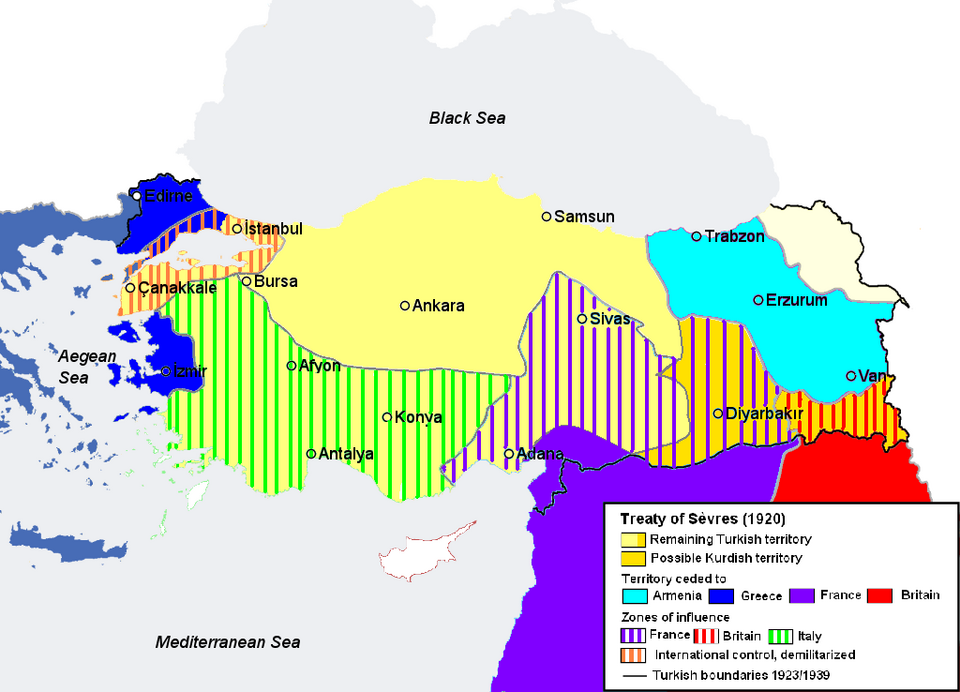

Zwischen Italien und der Türkei ist, wie aus Konstantinopel verlautet, ein Neutralitätsvertrag abgeschlossen worden.[1] Diese Meldung wird durch einen Bericht der Daily News bestätigt.[1] In politischen Kreisen wird angenommen, dass der unlängst erfolgte rasche Abschluss des Mosul-Übereinkommens größtenteils eine Folge der türkischen Furcht vor einem militärischen Konflikt mit Italien gewesen sei.[1] Andererseits scheint dieses Abkommen nun seinerseits die Verhandlungen zwischen Rom und Angora gefördert und den Weg für den jetzt geschlossenen Pakt geebnet zu haben.[1]
Italien und die Türkei schließen Neutralitätsvertrag
Mosul-Abkommen als Beschleuniger der Verhandlungen — Furcht Angoras vor einem Bruch mit Rom
London, 19. Juni.

Historische Einordnung
Der hier erwähnte Vertrag kam in dieser Form erst zwei Jahre später zustande. Am 30. Mai 1928 unterzeichneten Italien und die Türkei in Rom einen Neutralitäts- und Freundschaftsvertrag, der die Beziehungen stabilisieren sollte. Das Abkommen verlor jedoch in den 1930er Jahren an Bedeutung, als die aggressive Expansionspolitik des faschistischen Italien im Mittelmeerraum die türkischen Sicherheitsinteressen zunehmend bedrohte.
Quellenverweise:
- Berliner Tageblatt (Deutsche Digitale Bibliothek) 1926-06-19